News · What's happening in the world

Antonelli gagne, le titre attendra
Le dimanche 25 octobre 2026, Kimi Antonelli a gagné à Austin en partant de la pole, mais la fête du titre attendra, au moins jusqu'à Mexico.
L'horloge au cœur de l'atome
En une seule semaine d'octobre 2026, deux équipes, aux deux bouts du monde et chacune de son côté, ont fait marcher une horloge réglée sur le minuscule cœur d'un atome.

Trois buts pour Díaz
Le samedi 17 octobre 2026, Luis Díaz a mis trois buts dans le 6-1 du Bayern contre Leipzig, et Manchester City comme Barcelona ont encore tout gagné.

Le salon né dans un jardin
En 1898, au tout premier salon de l'automobile du monde, chaque voiture devait d'abord faire l'aller-retour jusqu'à Versailles ; en octobre 2026, le même salon parisien était plein de petites voitures électriques.

Singapour, enfin
Le dimanche 11 octobre 2026, à sa dixième course à Singapour, Max Verstappen a enfin gagné là-bas, et il a mené du premier au dernier tour.
Les tigres sont revenus
Le 8 octobre 2026, un grand rapport sur les animaux sauvages a compté les pertes, mais aussi ceux qui sont revenus : parmi eux, 2500 tigres sauvages de plus qu'en 2010.
De retour à Sepang, Verstappen gagne encore
Le dimanche 4 octobre 2026, la pluie a fait attendre la Formule 1 une heure et demie, puis Max Verstappen a gagné à Sepang, le circuit de sa dernière victoire là-bas, neuf ans plus tôt.
Cinquante ans sans morsure
En septembre 2026, le Chili a reçu un certificat pour quelque chose qui n'est pas arrivé : depuis plus de cinquante ans, personne là-bas n'est mort de la rage à cause d'un chien.
Les yeux du Timor-Leste
L'un des plus jeunes pays du monde vient à bout de la première cause infectieuse de cécité avec quatre outils simples, et en septembre 2026, l'OMS le confirme.
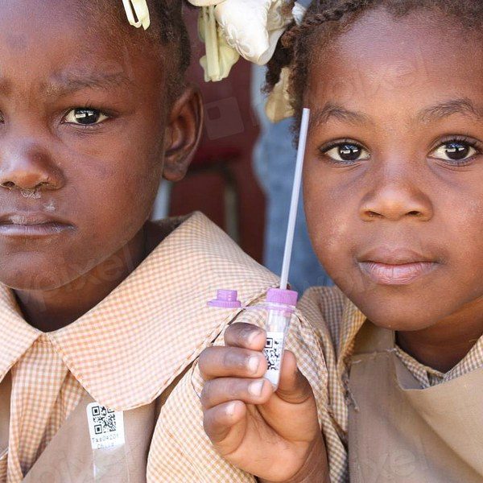
Un sur huit
Une infirmière du Malawi fait la même petite piqûre depuis des années, et en mai 2026, on apprend enfin ce que ça a changé.
Le mois où le vent a gagné
En avril 2026, pour la toute première fois, le vent et le soleil ont fait plus d'électricité dans le monde que le gaz.
La forêt qui a cessé de rétrécir
Chaque mois d'août, le Brésil additionne la forêt amazonienne perdue dans l'année, et en 2026, le total a été le plus petit depuis treize ans.
Le coffre-fort dans la montagne
Au fond d'une montagne gelée, le monde garde une copie de secours de sa nourriture.
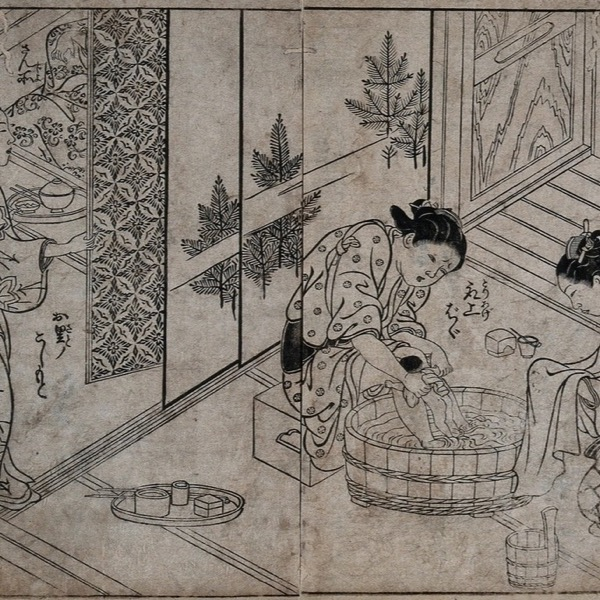
Les premières mains
Les premières mains qui tiennent la plupart des bébés du monde, ce sont souvent celles d'une sage-femme, et en décembre 2023, l'UNESCO a dit que ce savoir était un trésor.
Les baleines qui chantent de nouveau
Il y a cinquante ans, l'océan devenait silencieux ; aujourd'hui, les baleines à bosse chantent de nouveau là où personne ne les avait entendues depuis cent ans.
La forêt de poche
Elle est grande comme un terrain de tennis, et pourtant cette petite forêt ramène les oiseaux et l'ombre fraîche dans une rue de la ville.
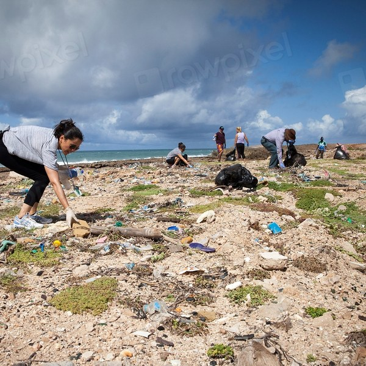
Les robots qui nettoient l'océan
De petits robots qui flottent sur les rivières et ramassent le plastique avant qu'il arrive à la mer.
Une ville apprend à partager ses rues
Une ville rend ses rues aux vélos et aux piétons, et contre toute attente, il y a moins de bouchons, pas plus.
Life Lessons · Little stories, bigger ideas
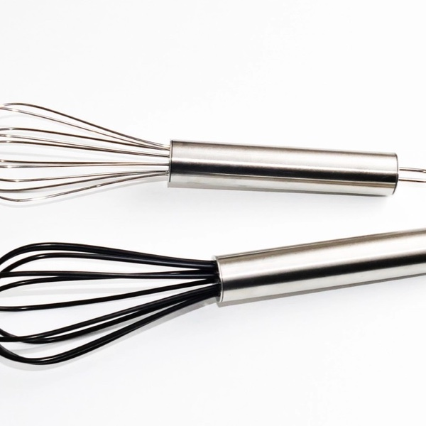
Regarde deux fois
En mars 1966, un nouveau magazine a mis côte à côte des machines à coudre et des mixeurs, et la même idée toute simple est imprimée aujourd'hui en petit chiffre sur le rayon où tu fais tes courses.
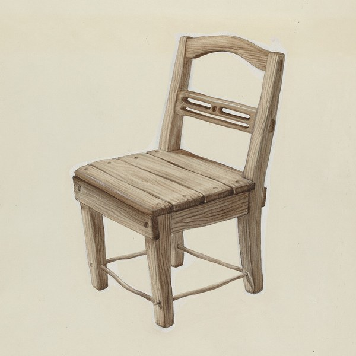
La petite chaise
En 1907, à Rome, une médecin a donné à une cinquantaine de petits enfants des chaises qu'ils pouvaient porter tout seuls, et elle a vu ce que font les enfants quand on les laisse choisir.
Un ballon fait d'une chaussette
Dans les années 1940, un garçon pauvre du Brésil jouait dans la rue avec une chaussette pleine de papier journal ; à dix-sept ans, il a marqué deux fois en finale de la Coupe du monde.
Le canard en bois
En 1932, un charpentier de village danois qui n'a plus de maisons à construire se met à fabriquer des jouets en bois, et un soir il renvoie son fils à la gare pour revernir chaque canard.
Le cahier
Un employé de bureau de Madras apprend les maths tout seul dans un livre emprunté, remplit des cahiers de résultats que personne n'a jamais vus et, en 1913, il écrit à un inconnu.
Ce qui reste
Lena a une liste de métiers qui vont disparaître ; sa grand-mère, qui répare des horloges depuis cinquante ans, en a une plus courte.
La dixième pièce
Tomas est toujours fauché le vingt du mois, jusqu'à ce que la femme du kiosque lui montre où elle met sa première pièce.
Les deux jardins
Un regard par-dessus la clôture, et Nadia ne voit plus du tout son propre jardin.
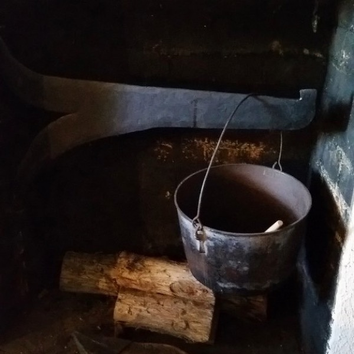
La soupe au caillou
Une voyageuse affamée, un village où personne n'a rien à donner, et une soupe qui commence avec un simple caillou.
La boulangerie qui fermait à midi
Une boulangère vend tout son pain avant midi, un homme d'affaires lui répète qu'elle devrait s'agrandir, et elle lui demande : pour quoi faire ?
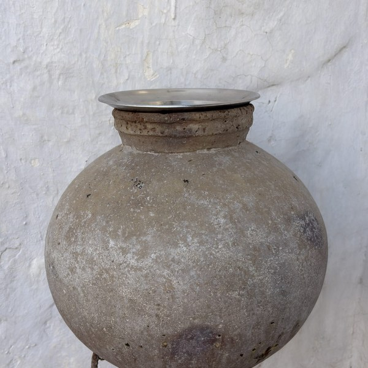
Le pot fêlé
Un pot fêlé a honte de perdre son eau tous les jours, jusqu'au jour où il voit ce qui pousse de son côté du chemin.
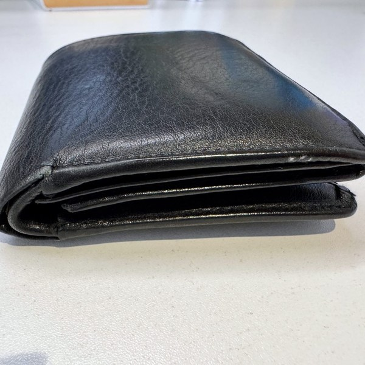
Le portefeuille dans le train
Un voyageur fatigué trouve sous un siège un portefeuille plein d'argent, et il n'a qu'un arrêt pour décider quoi en faire.
Le bocal de pierres
Une professeure remplit un bocal de grosses pierres, de petites pierres et de sable, puis elle demande à la classe ce que ça veut dire.
Health Tips · Small habits, real results

Quarante minutes à Naples
En 2005, à Naples, un pédiatre s'est demandé ce qui se passe pour l'allaitement quand les pères apprennent à aider, et un seul cours a suffi pour le savoir.

La région qui a changé ses tartines
En 1972, dans une région de Finlande où plus d'hommes mouraient du cœur que partout ailleurs dans le monde, on a commencé à changer ce qu'on mettait sur son pain.

Le mois du père
En 1974, la Suède a laissé les pères rester à la maison avec un nouveau bébé, et presque aucun ne l'a fait ; en 1995, elle leur a réservé un mois, et ça a changé ce que fait un père.
Le bocal de l'hôpital
En 1928, à Bombay, une médecin anglaise a remis sur pied des femmes enceintes épuisées avec un bocal de levure à tartiner pas chère, et ce qu'elle a trouvé est aujourd'hui un conseil pour chaque grossesse.

L'homme qui portait une serviette hygiénique
En 1998, dans le sud de l'Inde, un homme voit sa femme cacher un chiffon sale ; il décide de fabriquer une serviette hygiénique pas chère, et il la teste sur lui-même.
Le nettoyage qu'on ne peut pas faire soi-même
Mateo se brosse les dents deux fois par jour depuis trente ans ; alors pourquoi une hygiéniste lui montre une fine ligne jaune qu'aucune brosse n'enlèvera jamais ?
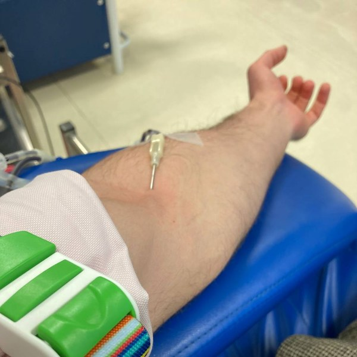
Votre sang a un nom
Selin donne son sang pour la première fois et veut savoir pourquoi il y a une lettre sur la poche ; la réponse remonte à Vienne, en 1901.
Deux heures de vert
Sur une île venteuse, une médecin écrit une ordonnance sans un seul médicament : deux heures par semaine dans la nature, en autant de morceaux qu'on veut.
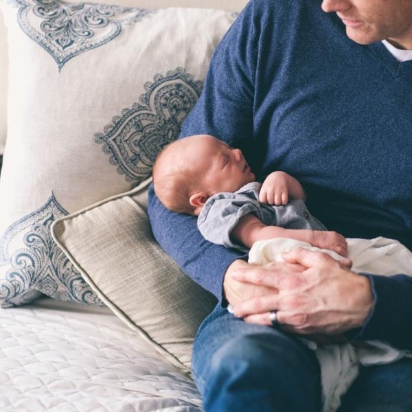
Peau contre peau
Un hôpital manque de couveuses, et un médecin essaie la plus vieille qui existe : la poitrine d'une mère.
La sieste de vingt-six minutes
La sieste la plus célèbre de l'histoire s'est passée dans un cockpit, sous l'œil de scientifiques, et elle était courte exprès.
La cuillère lente
Un oncle qui tient un restaurant explique à sa nièce pourquoi le message « je n'ai plus faim » met vingt minutes à arriver au cerveau.
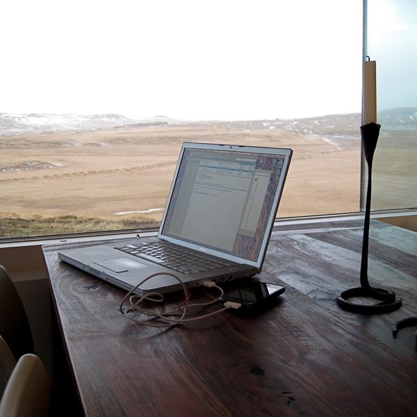
Reposez vos yeux
Une règle avec trois fois vingt dedans, pour tous ceux qui ont les yeux qui brûlent après une journée d'écran.
Le premier lait
Pourquoi ces drôles de gouttes dorées des premiers jours sont exactement ce qu'il faut à un nouveau-né.
Trois bonnes choses
Un petit carnet vert et une habitude toute simple, chaque soir avant de dormir, changent peu à peu le goût d'une journée difficile.
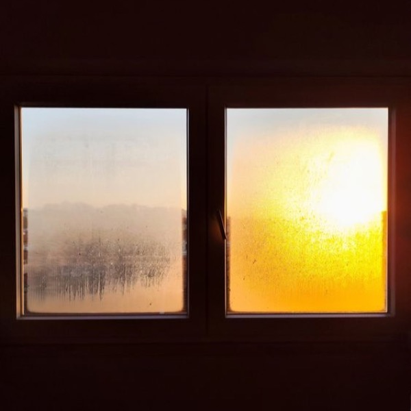
La lumière du matin
Rafael a tout essayé pour mieux dormir la nuit, et la solution, elle était dans ses matins.
La respiration en quatre temps
Le truc d'un vieux capitaine pour garder son calme par gros temps marche aussi dix minutes avant un examen.
Dix minutes de marche
Pas le temps d'aller à la salle de sport ? En fait, une petite marche après le repas fait plus de bien qu'on l'imagine.
Pourquoi grand-mère avait raison sur le sommeil
Une grand-mère répétait toujours « Couche-toi tôt », et en fait, la science est d'accord avec elle.
Book Quotes · Words worth remembering
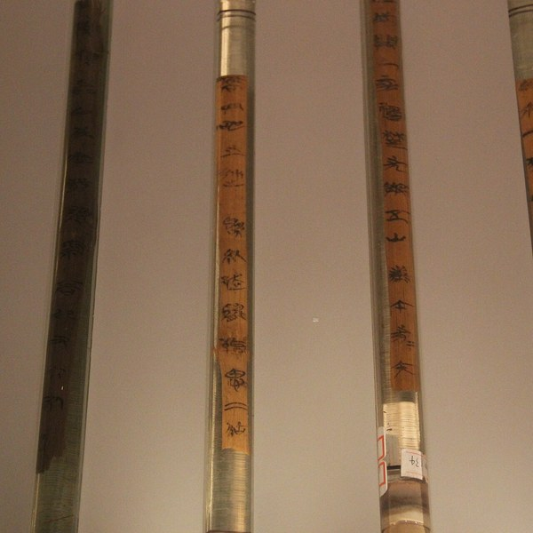
Mille li
En 1993, des voleurs sont entrés dans une tombe en Chine, mais ils ont laissé le bambou, et dessus, il y avait la plus vieille copie d'un livre où se trouve une des phrases les plus connues au monde.
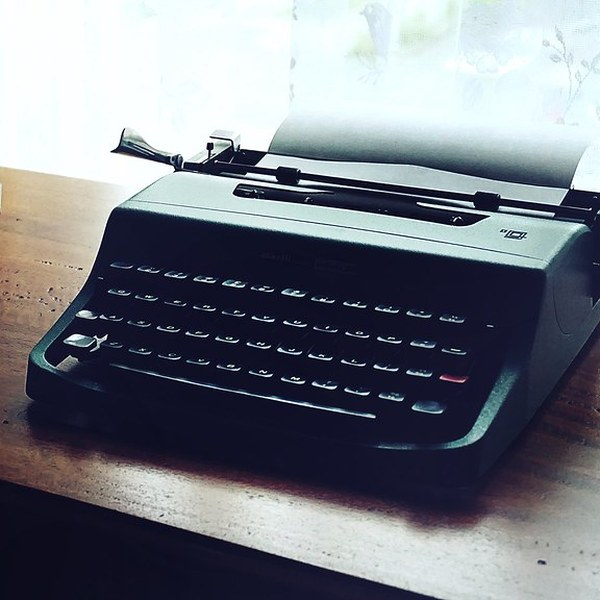
Une chambre à soi
En octobre 1928, Virginia Woolf a dit aux étudiantes de Cambridge ce dont une écrivaine a besoin, et sa réponse tient encore en une ligne.
Une règle ancienne
Vers 261 av. J.-C., un roi indien a gagné une guerre, a compté les morts et a tout arrêté ; une phrase d'un très vieux livre bouddhiste dit ce qu'il avait compris.
Rythme et nombre
En 1970, un étudiant en physique commence un doctorat à Londres, son groupe le retarde de trente-sept ans, et Platon explique pourquoi la guitare n'a jamais été un détour.
Cinq promesses
Un petit mensonge le mardi, trois mauvaises nuits, et dans une salle d'attente, un verset vieux de deux mille ans qui explique exactement ce qu'un arbre se fait à lui-même.
Tout ce que nous sommes
Le train a quarante minutes de retard et, dans la tête de Daniel, la journée est déjà fichue ; les deux premiers versets d'un très vieux livre ont quelque chose à dire là-dessus.
Des actes sans histoire
Pourquoi George Eliot a fini son plus grand roman avec une héroïne dont personne ne se souvient, et ce que ça change pour votre semaine.
Jamais inutile
Une phrase que Charles Dickens a donnée à un personnage de son dernier roman terminé, et le garçon pour qui il n'a jamais arrêté d'écrire.
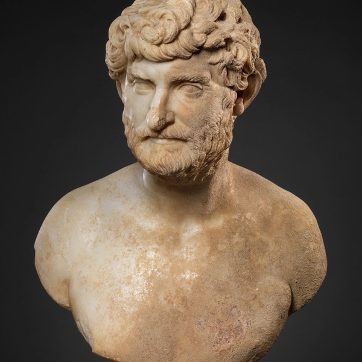
La vie est longue
Tout le monde se plaint que la vie est courte, mais il y a deux mille ans, un philosophe romain a répondu autre chose.
Une heure de lecture
Les grandes idées de Montesquieu ont aidé à dessiner l'État moderne, mais la phrase qu'on recopie encore de ses carnets est toute petite, et elle parle de lecture.
Ce qui a des plumes
Emily Dickinson a fait de l'espoir un petit oiseau à plumes, et ça sonne toujours juste.
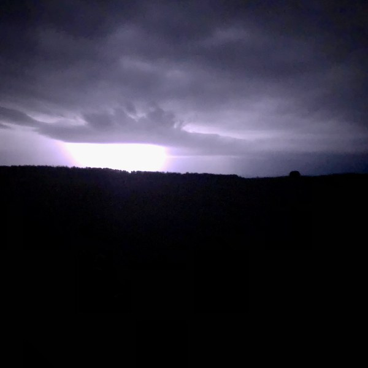
Ce qu'Amy March a appris sur les tempêtes
Une phrase d'Amy March, dite par beau temps, et ce qu'elle nous apprend vraiment sur la peur.
Le secret pour avancer
Une phrase célèbre pour arrêter de tout remettre à plus tard, et une surprise : elle ne vient sans doute pas de celui qu'on croit.
Cooking Recipes · Cook while you learn

La soupe de la liberté
Chaque 1er janvier, les Haïtiens mangent une soupe au potiron que, d'après l'histoire, les esclaves n'avaient pas le droit de goûter ; en 2021, l'UNESCO l'a inscrite sur sa liste du patrimoine vivant.

La tarte à l'envers
Dès 1894, deux sœurs ont tenu un hôtel en face d'une gare, en France, et l'une d'elles faisait sa tarte aux pommes à l'envers : voici l'histoire vraie et la recette.

La sauce qui prend toute la matinée
En 1891, aucun éditeur n'a voulu du livre de cuisine de Pellegrino Artusi : il l'a imprimé lui-même, avec dedans l'une des premières recettes écrites de la sauce de Bologne.

Les pâtes de minuit
Il est minuit dix à Naples, quatre amis meurent de faim, et dans le placard, il n'y a que des spaghettis, de l'ail, de l'huile et un piment sec : ça fait un dîner.
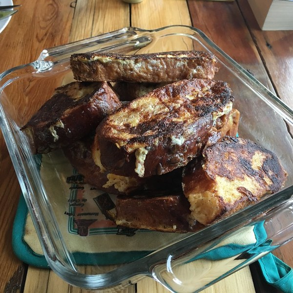
Le pain perdu
Le dimanche, le pain de jeudi est dur comme une pierre, mais chez Colette, on ne jette rien : c'est même pour ça que le plat s'appelle comme ça.
Une casserole de lentilles
Le meilleur dîner pas cher du monde demande une casserole, vingt minutes et un voisin qui connaît le truc.
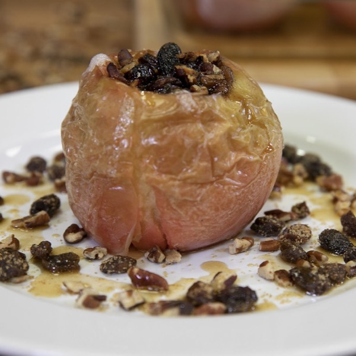
La pomme au four
Un dessert du temps où le sucre coûtait cher : une pomme, quelques noix, une cuillère de miel, et une cuisine qui sent le mois de décembre.
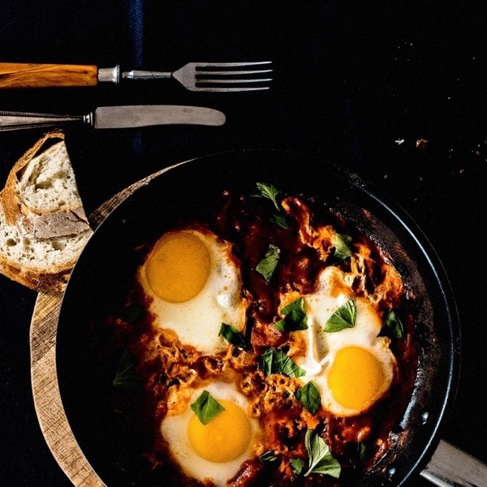
Une poêle de rouge et d'or
Une poêle, une sauce tomate bien généreuse et des œufs qui pochent dedans : le petit-déjeuner arrive tel quel sur la table.
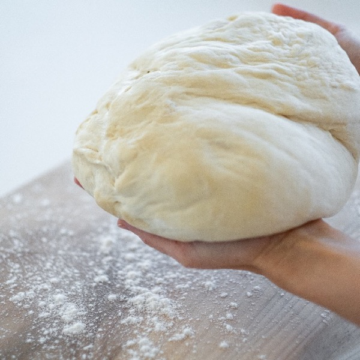
Le pain patient
Quatre ingrédients, une minute à remuer, et une nuit d'attente qui pétrit à votre place.
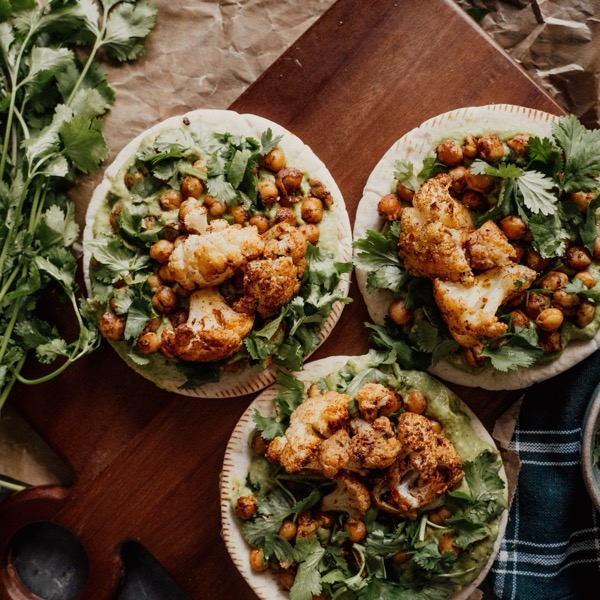
Un plateau de couleurs
Une plaque de four, les légumes colorés que le frigo veut bien donner, et trente minutes pour faire autre chose.
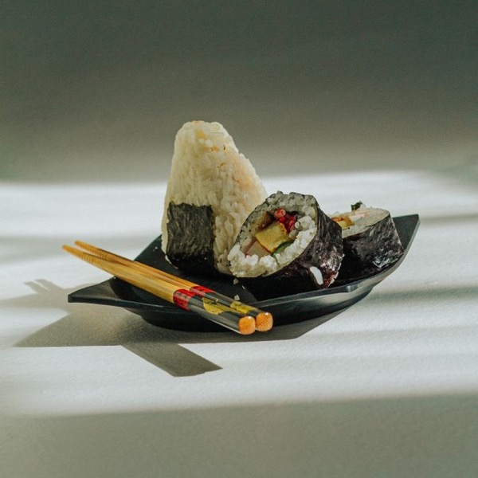
Onigiri
Une astuce japonaise pour le déjeuner, vieille de plus de mille ans, qui ne demande que du riz, du sel et vos deux mains.

Le lait doré
Une tasse chaude et cinq minutes de calme : la boisson du soir que les familles indiennes préparent depuis des générations.
La soupe de tomates de grand-père
Une casserole, cinq ingrédients et une soupe qui a le goût d'une soirée d'automne bien au chaud à la maison.
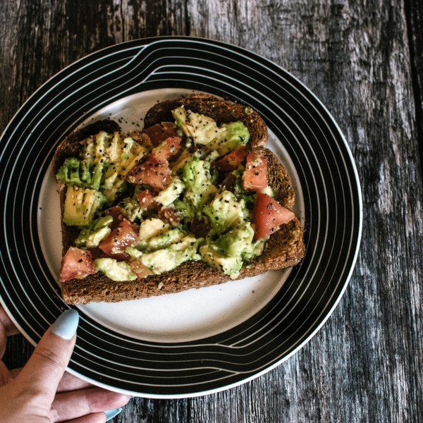
Un petit-déjeuner en cinq minutes : tartine d'avocat
Pas de plaque, pas de four : juste du pain, un avocat et cinq minutes.
Read them at A2, B1 and B2
Tap any word, listen along, save words to practise. No account, no ads.
Get Journeva on the App Store